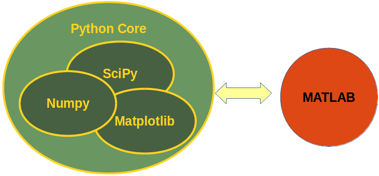

Calling Matlab (custom) functions from Python
Nowadays the ability to write codes has become an essential skill in technical and scientific disciplines. Either you like it or not, during your studies you will find yourself doing assignments, solving equations or bigger ‘problems’ of your projects with some sort of coding. And, if you think of going for higher studies and doing some extensive research, then writing codes is a must know skill for you.
Quite often, students will become familiar with scientific programming (note that I am not specifically refferring to CS students, focused on general purpose coding and programming) through MATLAB. The simple reason for that is that MATLAB has been there for scientific computing for a long while, and it has become a legacy language or tool for the scientific community. Engineers and Scientists always needed a programming language that expresses matrix and array mathematics directly, and then MATLAB (matrix laboratory) came into existence. MATLAB is a math and matrix oriented language comes with different types of specialized toolboxes (you have to pay for toolbox) for several purposes e.g. modelling economic data, image analysis or driving a robot. These toolboxes are professionally developed, rigorously tested and well documented for scientific and engineering applications. And that’s why you pay the price for it.
MATLAB has a solid amount of functions amd an extraordinarily good documentation to start learning, and a large scientific community who have either answered the questions that are going to be asked or will be answered by someone as you post them in the MATLAB Central. There are 365,000 contributors, 120 questions are answered and 25,000 sample scripts or codes are downloaded per day. It has toolboxes for computational biology, computational finances, control systems, data science, image processing and computer vision, machine learning, physical modelling and simulation, robotics, signal processing and communications and IOT.
On the other side, we have Python, whcih is a much younger programming language, whose history of scientific computing packages, e.g. SciPy, NumPy, have not been antiquated. Moreover, in Python you often have to rely on community-authored packages for scientific and engineering usages. Calling Python as an alternative to MATLAB is technically incorrect. It is a general purpose programming language, which you to develop fully fledged apps and software tools, and to create applications using any of the major GUI libraries (e.g. Qt), use OpenGL, drive your USB port, etc.
Being a free, cross-platform, general-purpose and high-level programming language, lots of people are now adopting Python. IDES like pycharm, ipython notebook, jupyter notebook an distributions like anaconda has made python far more usable for researchers. As a result of this popularity, plenty of Python scientific packages have become available with extensive documentation for data visualization, machine learning, natural language processing, complex data analysis and more. For example, scikit-learn includes start-of-the-art ‘Machine Learning’ approaches with very good documentation and tutorials.

Sometimes, choosing between MATLAB and Python is a personal matter, or it could be task-specific. Other times, you may be forced to opt for Python. Personally, there are some fundamental issues that made me search for an alternative to MATLAB. I think the most fundamental problem with Matlab is its commercial nature, and this is the basis for several issues:
- The algorithms are proprietary, which means you (most of the times) can not see the code of the algorithms you are using and have to trust that Matlab implemented it right.
- Obviously, Matlab is expensive.
- It makes portability more difficult. The portability solution (the Matlab Component Runtime (MCR)) works fine, but Matlab had to take great care that one cannot use it to do generic Matlabing with it. Maybe this is the reason that the application must be exactly the same version as the installed MCR, which can be a nuisance considering that Matlab releases a new version every 6 months.
- The proprietary nature also makes it hard, if not impossible, for 3th parties to extend or create tools for Matlab.
Of course, Matlab has its advantages too:
- It has a solid amount of functions.
- It mights also be easier to use for beginners, because the package includes all, while in Python you need to install extra packages and an IDE.
- It has a large scientific community.
- It is used on many universities (but few companies have the money to buy a license).
Last point is even more important if you consider the possibility of you working in academic research. It is not so unlikely that your colleagues are more familiar using MATLAB than Python, or that code examples ot functions released alongside published research articles will be written in MATLAB. Moreover, MATLAB supports writing complex (and computationally expensive) function in C/C++ source files, which are later compiled in a proprietary binary format called MEX.
Long story short:
- you are a hardcore Python user and supported but find yourself dealing with MATLAB-friendly colleagues;
- you need to use a function which is shipped as a compiled binary MEX file (meaning that even if you wanted, you cannot read and translate the source to Python, or recompile the C/C++ source in such a way it is possible to call it from Python);
- or simply you like really much how a tool has been implemented in MATLAB (e.g. functions of the Statistical Toolbox, or the Optimization Toolbox, which are really well developed and documented) and you want to directly use them, instead of looking for native Python alternative.
If you recognize yourself into one of the previous categories, in the remainder of this post we are going to see a couple of strategies you can use to call MATLAB functions from you Python code, in such a way that they will behave like native Python code, accepting inputs and providing outputs directly into Python current workspace.
MATLAB API for Python
To the MATLAB® Engine API for Python® you will need to have a copy of MATLAB installed in you system. There is no workaround for this, as far as I know, and this is a consequence of MATLAB being a proprietary software. This API supports almost every version of Python, and requires CPython to be installed on your system, in order to use the referencing of inputs and outputs required to exchange arguments between the two worlds.
If you satisfies this requirements, the installation of the API is very simple, and it is done as you would do for every Python source code library. On Linux it sounds like this:
cd "matlabroot/extern/engines/python"
python setup.py install
where matlabroot is the path where you installed MATLAB on your system.
That’s it!
The API provides a Python package named matlab that enables you to call MATLAB functions from Python. You install the package once, and then you can call the engine in your current or future Python sessions. You can import this newly installed package by importing it into your current Python session:
import matlab.engine
eng = matlab.engine.start_matlab()
IF you want to keep things separated, and you need to have different sessions/workspaces for MATLAB, within you workflor, you can simply start multiple engines, which won’t communicate with each other:
eng1 = matlab.engine.start_matlab()
eng2 = matlab.engine.start_matlab()
To stop a matlab engine you can either quit your current Python session, or explicitly arrest the engine itself:
eng1.exit
eng2.quit()
Call MATLAB (built-in) functions from Python
You can call any MATLAB function directly and return the results to Python. This holds as long as the function can be found in MATLAB’s path (we will come beck to this shortly).
For example, to determine if a number is prime, use the engine to call the isprime function.
tf = eng.isprime(37)
print(tf)
print(type(tf))
True
<type 'bool'>
This was a simple one: the MATALB function we call produced only one output, and it was a ‘scalar’ (actually boolean) output, not an array of some type.
When you call a function with the engine, by default the engine returns a single output argument. If you know that the function can return multiple arguments, you will need to use the nargout argument to specify the number of output arguments.
As an example, to determine the greatest common denominator of two numbers, use the gcd function, by setting nargout to return the three output arguments from gcd:
t = eng.gcd(100.0,80.0,nargout=3)
print(t)
print(type(t))
(20.0, 1.0, -1.0)
<type 'tuple'>
Transfering variables from Python to MATLAB workspace
When you start the engine, it provides an interface to a collection of all MATLAB variables. This collection, named workspace, is implemented as a Python dictionary that is attached to the engine:
- The name of each MATLAB variable becomes a key in the workspace dictionary.
- The keys in workspace must be valid MATLAB identifiers (e.g., you cannot use numbers as keys).
You can add variables to the engine workspace in Python, and then you can use the variables in MATLAB functions:
# variable x in Python workspace
x = 4.0
# a new variable called y is added to MATLAB workspace, and is value is set to be equal to Python's x
eng.workspace['y'] = x
# we can use variable y while calling MATLAB functions, ad MATLAB is aware of all the variable availabe in its workspace
a = eng.eval('sqrt(y)')
print(a)
2.0
In this example, x exists only as a Python variable. Its value is assigned to a new entry in the engine workspace, called y, creating a MATLAB variable. You can then call the MATLAB eval function to execute the sqrt(y) statement in MATLAB and return the output value, 2.0, to Python.
Use MATLAB Arrays in Python
Usually, while working with MATLAB, we are interested in performing complex operations on arrays. The matlab package provides constructors to create MATLAB arrays in Python. The MATLAB Engine API for Python can pass such arrays as input arguments to MATLAB functions, and can return such arrays as output arguments to Python.
You can create arrays of any MATLAB numeric or logical type from Python sequence types, as follows:
a = matlab.double([1,4,9,16,25])
b = eng.sqrt(a)
print(b)
print(type(b))
[[1.0,2.0,3.0,4.0,5.0]]
<class 'matlab.mlarray.double'>
The engine returns b, which is a 1-by-5 matlab.double array.
The same applies if we want to create a multidimensional array. The magic function returns a 2-D matlab.double array to Python.
a = eng.magic(6)
for x in a:
print(x)
print(type(a))
[35.0,1.0,6.0,26.0,19.0,24.0]
[3.0,32.0,7.0,21.0,23.0,25.0]
[31.0,9.0,2.0,22.0,27.0,20.0]
[8.0,28.0,33.0,17.0,10.0,15.0]
[30.0,5.0,34.0,12.0,14.0,16.0]
[4.0,36.0,29.0,13.0,18.0,11.0]
<class 'matlab.mlarray.double'>
Unfortunately, matlab package seems to work only with pure Python data structures, meaning that we will need to use some tricks if we are interested in working with, e.g., numpy arrays.
This is important, as usually if we need to call a MATALB function to work on arrays, it is because in Python we were working with arrays and this is usually done via numpy.
Let’s see what happens:
import numpy as np
a = np.array([1,2,3,4]).reshape([1,4])
b = a**2
print(type(a))
print(type(b))
print(b)
print(b.shape)
<type 'numpy.ndarray'>
<type 'numpy.ndarray'>
[[ 1 4 9 16]]
(1, 4)
We created a numpy array a, and then we compute the square of each of its values, yelding another numpy array.
If we try to reproduce this operation using matlab package we will be stuck in an error as soon as we try to cast the numpy array a as a matlab.double array:
a_m = matlab.double(a)
---------------------------------------------------------------------------
ValueError Traceback (most recent call last)
<ipython-input-10-1757930e4e37> in <module>()
----> 1 a_m = matlab.double(a)
/media/DATA/miniconda3/envs/tomolab2/lib/python2.7/site-packages/matlab/mlarray.pyc in __init__(self, initializer, size, is_complex)
49 super(double, self).__init__('d', initializer, size, is_complex)
50 except Exception as ex:
---> 51 raise ex
52
53
ValueError: initializer must be a rectangular nested sequence
This happens because matlab.double function is expecting a list or a tuple as input, and it is unable to understand the numpy.ndarray datatype.
A workaraound is to go back to the list format:
a_m = matlab.double(a.tolist()) # casting a as list
b_m = eng.power(a_m,2.0)
print((b_m))
print(type(b_m))
print(b_m.size)
[[1.0,4.0,9.0,16.0]]
<class 'matlab.mlarray.double'>
(1, 4)
There are additional problems that we need to face here: the output produced by the call to a MATLAB function is alway os type matlab.mlarray. This is usefull if it is the endpoint of our computation, but if we need to perform other operations (in Python) on the output of the MATLAB function, this format if of little to no use, for us.
If we want to be correct, matlab.mlarray is seen almost as a list in Python. Basic operations are supported, but even transpose or reshape throw errors. To overcome this limitation we can recast the output as nupmy array*.
b_n = np.asarray(b_m)
print(b_n)
print(type(b_n))
print(b_n.shape)
[[ 1. 4. 9. 16.]]
<type 'numpy.ndarray'>
(1, 4)
This can be done also in one line of code:
a_m = matlab.double(a.tolist()) # casting a as list
b_m = np.asarray(eng.power(a_m,2.0))
print((b_m))
print(type(b_m))
print(b_m.shape)
[[ 1. 4. 9. 16.]]
<type 'numpy.ndarray'>
(1, 4)
Calling custom MATLAB user scripts and functions from Python
So far we have seen how we can use matlab.engine to call built-in MATLAB functions to perform some computation on data, and strategies to passa data from Python session to MATLAB workspace.
This is rearely something we are interested in. Often times, we will be looking for ways to run custom MATLAB code, which can be of different types:
- scripts (*.m)
- function (*.m)
- MEX function (*.mexa64)
Let’s start with a very basic example, and let’s assume that, again we want to compute the power of an array.
We can use the following MATLAB code:
b = [1,2,3,4];
e = 2;
r = b.^e
In your current folder, copy this MATLAB code in a file named pow_script.m.
After you save the file, we can call it from within Python like this:
eng.pow_script(nargout=0)
r =
1 4 9 16
eng.workspace['r']
matlab.double([[1.0,4.0,9.0,16.0]])
Specifying nargout=0 is required. Although the script prints output, it returns no output arguments to Python.
Alternatively (and in my opinion more interestingly) we can convert the script to a function and call the function from the engine.
function r = pow_fun(b,e)
r = b.^e;
end
All the considerations previously made are still valid for a custom user function:
base = np.asarray([1.0,2.0,3.0,4.0])
exp = 2.0
ret = eng.pow_fun(matlab.double(base.tolist()),exp)
print(ret)
print(type(ret))
[[1.0,4.0,9.0,16.0]]
<class 'matlab.mlarray.double'>
And obviously this would allow us also to use complex MEX function within Python, passing Python arrays as input and receiving the output directly as Python variables (or numpy arrays).